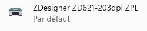
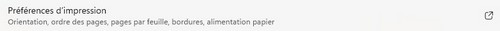
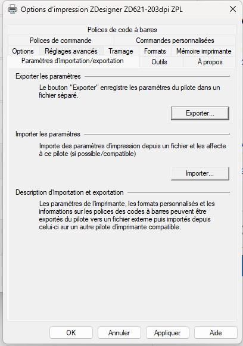
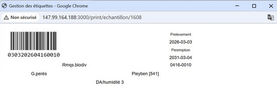
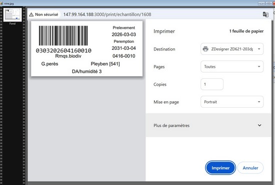

Demander à cédric d'installer l'imprimante sur votre poste (par mail)
Sélectionner importer et sélectionnez le fichier print.drs
Disponible ici faites (enregsitrez sous) :
FichierSélectionner l'imprimante

Sélectionner preferences

Dans l'onglet outil cliquer su import et selectionner le fichier précedement sauvegardé

C’est fait l'imprimante est installé il vous suffit de lancer Chrome :
A l'impression d'une étiquette :

Sélectionnez l'imprimante Designer:

Voilà c'est installé